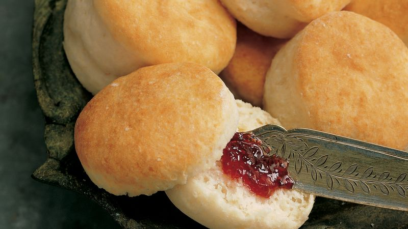

Angel Biscuits

Description
This is an easy and quick recipe for deliciously light, moist, and soft biscuits
Ingredients:
- 1 package of regular or quick active dry yeast (2 1/4 teaspoons
- 2 tablespoons warm water (105F to 115F)
- 2 1/2 cups all-purpose flour
- 3 tablespoons sugar or sweetener of choice
- 1 1/2 teaspoons baking powder
- 1/2 teaspoon baking powder
- 1/2 teaspoon salt
- 1/2 cup shortening or butter
- 1 cup buttermilk
Steps
- Heat oven to 400F. Dissolve yeast in warm water; set aside
- Mix flour, sugar, baking powder, baking soda, and salt in a large bowl. Cut in shortening/butter
using pastry blender or crisscrossing 2 knives, until mixture looks like fine crumbs (you can
also use your hands). Stir in yeast mixture and just enough buttermilk so dough leaves side
of bowl and forms a ball.
- Place dough on generously floured surface; gently roll in flour to coat. Knead lightly 25 to
30 times, sprinkling with flour if dough is too sticky. Roll or pat 1/2 inch thick. Cut with
floured 2 1/2-inch biscuit cutter,or use the rim of a cup. Place about 1 inch apart on
ungreased cookie sheet.
- Optional: cover biscuits and let them rise in a warm place for 30 minutes before baking as
directed. These will give them an even more irresistibly light and airy texture.
- If not cooking them immediately cover and place in fridge, taking them out an hour in advance.
Bake 12 to 14 minutes or until golden brown. Immediately remove from cookie sheet. Brush with
butter. Serve hot.